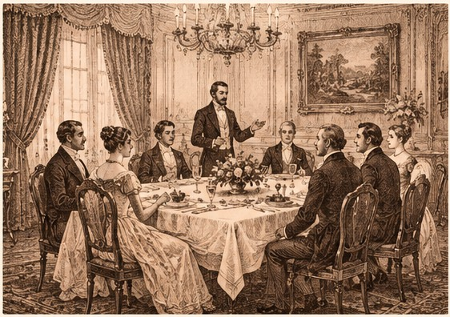
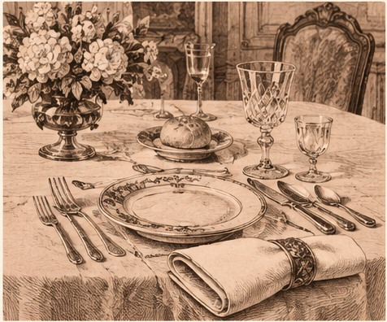
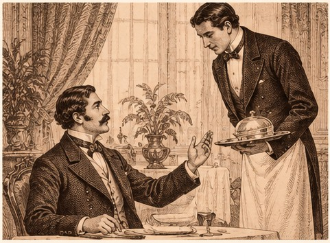
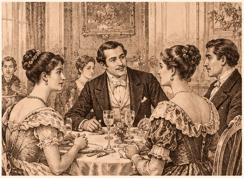

Manuel Antonio Carreño’s Manual de urbanidad y buenas maneras was first published in 1853. Some rules feel dated; many still shine. Tap a card to see today’s version.
A Venezuelan classic, read across Latin America. Paraphrased from the original Spanish. Carreño writes sirvientes; we say servers or waitstaff.
Illustration in a 19th-century engraving style; not a portrait of Carreño.
The formal meal

What’s on the table

Treating waitstaff

Your companions

Left in the 1800s
Not every rule aged well
Carreño also seated guests by rank and gave men and women separate duties. We kept the rules that still work today.